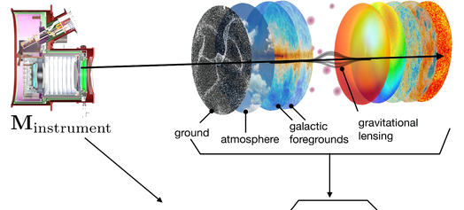
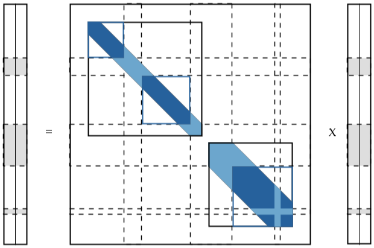
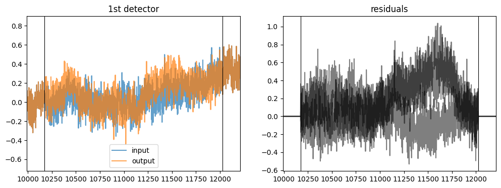
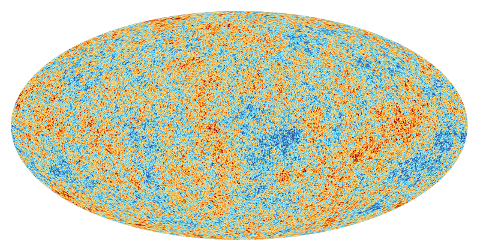
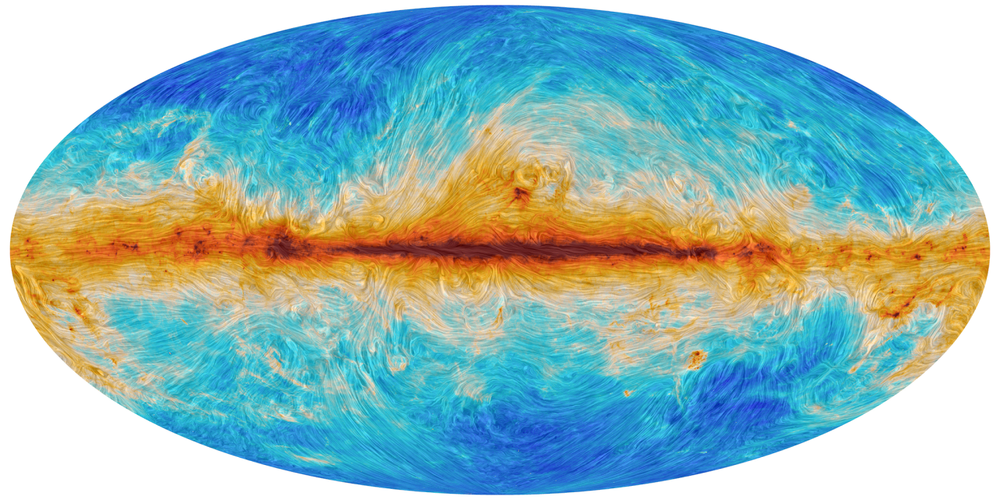
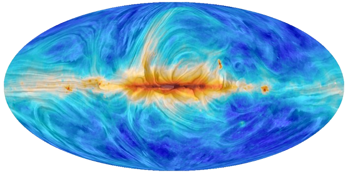
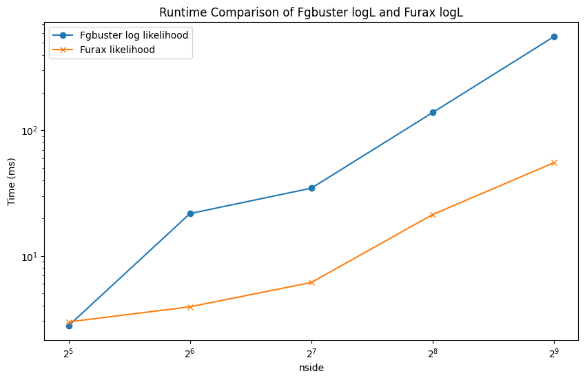
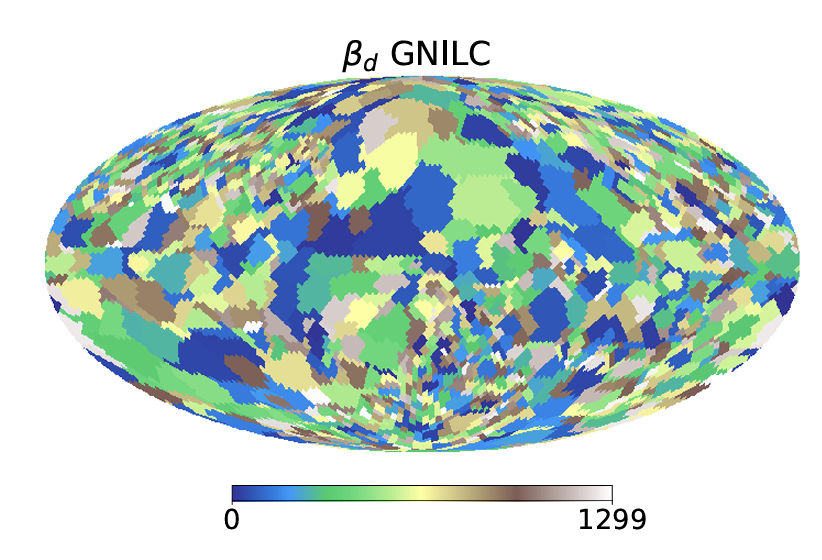
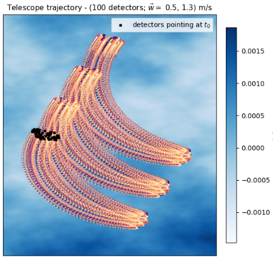
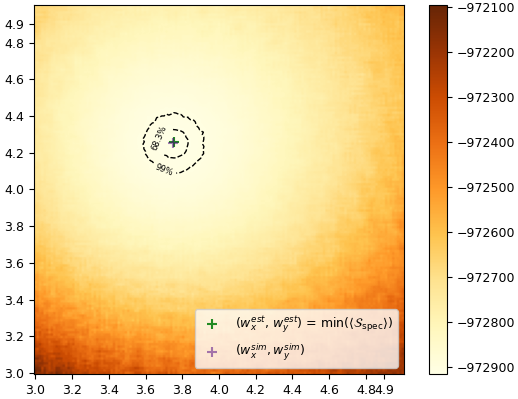

FURAX: a modular JAX toolbox for solving inverse problems in science
Simon Biquard, Pierre Chanial, Wassim Kabalan
2024-12-19


Outline
- Motivations and goals: why and for what?
- Presentation of the framework
- Applications in CMB science
Motivations and Goals
- Inverse problems: assuming data \(d_{obs} = F(p)\), find the parameters \(p\)
- Pure Python, open source: https://github.com/CMBSciPol/furax
pip install furax(work in progress!)
- Modular & extensible: Easy to experiment new ideas
- High-performance:
JAX(see next slide)
- Maximum likelihood and “template” map-making
- Non-ideal optical components
- Able to handle SO- and S4-like data sets
- Interfaces with
TOAST,sotodlib - Multi-GPU parallelization (soon)
- Interfaces with
What is JAX
From the JAX website:
JAX is a library for array-oriented numerical computation (à la NumPy), with automatic differentiation and JIT compilation to enable high-performance machine learning research.
Key features
- NumPy-like interface with CPU/GPU/TPU support in local and distributed environments
- Just-in-time (JIT) compilation via Open XLA
- Automatic differentiation
- Automatic vectorization
FURAX Building Blocks
PyTrees
FURAX relies on PyTrees to represent the data.
Example: random sky with 3 components
sky = {
'cmb': HealpixLandscape(nside, 'IQU').normal(key1),
'dust': HealpixLandscape(nside, 'IQU').normal(key2),
'synchrotron': HealpixLandscape(nside, 'IQU').normal(key3),
}HealpixLandscape(nside, 'IQU') returns an instance of StokesIQUPyTree, a container for the Stokes parameters I, Q, U.
Use FrequencyLandscape to generalize to multiple frequencies.
Operators
The base class AbstractLinearOperator provides a default implementation for the usual linear algebra operations.
| Operation | FURAX | Comment |
|---|---|---|
| Addition | A + B |
|
| Composition | A @ B |
|
| Multiplication by scalar | k * A |
Returns the composition of a HomothetyOperator and A |
| Transpose | A.T |
Through JAX autodiff, but can be overriden |
| Inverse | A.I |
By default, the CG solver is used, but it can be overriden or configured using a context manager |
| Block Assembly | BlockColumnOperator([A, B]) BlockDiagonalOperator([A, B]) BlockRowOperator([A, B]) |
Handle any PyTree of Operators: Block*Operator({'a': A, 'b': B}) |
| Flattened dense matrix | A.as_matrix() |
|
| Algebraic reduction | A.reduce() |
Operators (cont’d)
| Generic Operator | Description |
|---|---|
IdentityOperator |
|
HomothetyOperator |
|
DiagonalOperator |
|
BroadcastDiagonalOperator |
Non-square operator for broadcasting |
TensorOperator |
For dense matrix operations |
IndexOperator |
Can be used for projecting skies onto time-ordered series |
MoveAxisOperator |
|
ReshapeOperator |
|
RavelOperator |
|
SymmetricBandToeplitzOperator |
Methods: direct, FFT, overlap and save |
Block*Operator |
Block assembly operators (column, diagonal, row) |
| Applied Operator | Description |
|---|---|
QURotationOperator |
|
HWPOperator |
Ideal HWP |
LinearPolarizerOperator |
Ideal linear polarizer |
CMBOperator |
Parametrized CMB SED |
DustOperator |
Parametrized dust SED |
SynchrotronOperator |
Parametrized synchrotron SED |
Algebraic reductions: Rotations
Given this modeling of the acquisition, using an ideal linear polarizer and an ideal half wave plate:
\[ \mathbf{H} = \mathbf{C}_{\textrm{LP}} \, \mathbf{R}_{2\theta} \, \mathbf{R}_{-2\phi} \, \mathbf{C}_{\textrm{HWP}} \, \mathbf{R}_{2\phi} \, \mathbf{R}_{2\psi} \, \mathbf{P} \]
with
- \(\theta\): polarizer angle
- \(\phi\): half-wave plate angle
- \(\psi\): telescope angle
FURAX reduces this expression to:
\[ \mathbf{H} = \mathbf{C}_{\textrm{LP}} \, \mathbf{R}_{-2\theta + 4\phi + 2\psi}\, \mathbf{P} \]
CMB Applications
Credits: Ema Tsang, Wassim Kabalan, Amalia Villarrubia & the whole SciPol team
Generalized Map-Making
Classic data model
\[ d = \mathbf{P}s + n \]
- \(d\): time-ordered data
- \(\mathbf{P}\): pointing matrix (telescope scanning)
- \(s\): discretized sky signal
- \(n\): stochastic contribution (noise)
Optimal (GLS) solution
\[ \widehat{s} = (\mathbf{P}^\top \mathbf{N}^{-1} \mathbf{P})^{-1} \mathbf{P}^\top \mathbf{N}^{-1} d \]
Generalized parametric data model

\[ d_{\nu, i, t} = \int_{\textrm{BP}_\nu} d\nu' \mathbf{M}^{(\gamma)}_{\nu', i, t, p} \mathbf{A}^{(\beta)}_{\nu', t, c, p} s_{c, p} + n_{\nu, i, t} \]
- \(\mathbf{M}\): instrument matrix (pointing, HWP parameters, bandpasses, beam properties, etc.)
- \(\mathbf{A}\): mixing matrix (modeling of CMB, astrophysical foregrounds, atmosphere, etc.)
- \(\mathbf{H} = \mathbf{MA}\) is the generalized pointing operator
Time-domain noise correlations
Noise correlations in a stationary period correspond to a symmetric Toeplitz matrix structure.
Furax has the SymmetricBandToeplitzOperator with optimized matrix-vector operations in \(\mathcal O(n \log \lambda)\) (overlap-and-add method).

Restoring stationarity
To work around this problem, one solution is to fill the gaps with synthetic samples consistent with noise.
Furax’s GapFillingOperator computes a constrained noise realization from an estimate of the noise correlations.

Non-Ideal HWP (credits: Ema Tsang)
Realistic HWP operator
- several layers stacked
- transmission + reflection of incident EM field at the boundaries

Component Separation




- The Cosmic Microwave Background (CMB) signal is obscured by various foregrounds, making it challenging to detect the true cosmological information.
- Dust: Emission from galactic dust adds significant noise to the CMB, particularly affecting polarization measurements.
- Synchrotron Radiation: Electrons spiraling in the galaxy’s magnetic fields produce synchrotron radiation, another major contaminant.
Component separation methods
- Blind Methods: Like SMICA (Spectral Matching Independent Component Analysis)
- Parametric Methods: Like FGbuster (Foreground Buster)
Credit: Wassim Kabalan
On-going development of parametric component separation within the FURAX framework
Does everything fgbuster does but “better”
- Uses FURAX linear algebra operators to efficiently represent the mixing matrix
- Is written in JAX, is hardware accelerated
- Provides easy access to gradients

Beyond fgbuster
- Automatic cluster detection for spectral index parameters
- Flexible likelihood model (can be extended to include more components and different objective functions)

Credit: Wassim Kabalan
On-going development of parametric component separation within the FURAX framework
Creating a Mixing Matrix Operator for SED evaluation
from furax.seds import \
CMBOperator,DustOperator, SynchrotronOperator
def make_A(TEMP_D , BETA_D , BETA_S):
cmb = CMBOperator(nu, in_structure)
dust = DustOperator(nu , TEMP_D , BETA_D)
synchrotron = SynchrotronOperator(nu , BETA_S)
mixed_sed = BlockRowOperator({
'cmb': cmb,
'dust': dust,
'synchrotron': synchrotron,
})
return mixed_sedTrivial construction of a spectral likelihood functions
Easy to evaluate and extend
- The likelihood function is readily available and can be easily extended to include more components or different objective functions.
- Easy access to gradients and hessians for optimization.
Credit: Wassim Kabalan
Atmosphere Decontamination Using Time-Domain Component Separation
Science Goal
For the Simons Observatory, characterize the observed atmospheric template from the recorded time-ordered data to separate the atmosphere from the sky signal we are after.

Data Model
\[ d_{\text{atm}} = \mathbf{A}(\text{PWV}) \mathbf{P}(w_x, w_y) s_{\text{atm}} + n \]
Model Parameters
- Wind velocity: \(\vec{w} = (w_x, w_y)\)
- Precipitable Water Vapour (PWV): ~Amplitude of atmospheric fluctuations.
- Estimate parameters by minimizing the spectral likelihood.
Atmospheric time-ordered data recorded by our telescope at two frequencies: \(d_{\text{atm}}\)
Mixing matrix \(\mathbf{A} = \begin{bmatrix} a(\text{PWV}_{1}) & 0 \\ 0 & a(\text{PWV}_{2}) \end{bmatrix}\)
Pointing matrix \(\mathbf{P} = \begin{bmatrix} P_{1} \\ P_{2} \end{bmatrix}\)
Atmospheric template: \(s_{\text{atm}}\)
Noise: \(n\), of covariance matrix \(\mathbf{N} = \begin{bmatrix} \sigma_{1}^{2} & 0 \\ 0 & \sigma_{2}^{2} \end{bmatrix}\)
Spectral Likelihood
\[ \boxed{ \langle \delta \mathcal{S}_\text{spec}(w_x, w_y, \text{PWV} \mid \vec{d}_{\text{atm}}) \rangle = \vec{d}_{\text{atm}}^\top \cdot \mathbf{AP} \Big[ (\mathbf{AP})^\top \mathbf{N}^{-1} (\mathbf{AP}) \Big]^{-1} (\mathbf{AP})^\top \mathbf{N}^{-1} d_{\text{atm}} } \]
Credit: Amalia Villarrubia Aguilar
Atmosphere Decontamination Using Time-Domain Component Separation
Spectral likelihood computation using FURAX
def average_spectral_likelihood_noise(d_atm, w_vec, PWV):
# POINTING matrix (shape: (n_detectors * N_obs * n_freq) x N_pix)
P_single_freq = pointing_matrix_single_freq(detector_pointings_t, t_obs, n_detectors, z_atm, d_pix_sim, N_pix_sim, w_vec)
P = BlockColumnOperator({‘93’: P_single_freq, ‘145’: P_single_freq})
# MIXING matrix: (shape: (n_detectors * N_obs * n_freq) x (n_detectors * N_obs * n_freq))
A_block_structure = StokesIPyTree.structure_for((n_detectors,N_obs))
A_93 = HomothetyOperator(atm_emission(PWV, mu_93)/atm_emission(PWV, mu_93), in_structure=A_block_structure)
A_145 = HomothetyOperator(atm_emission(PWV, mu_145)/atm_emission(PWV, mu_93), in_structure=A_block_structure)
A = BlockDiagonalOperator({‘93’: A_93, ‘145’: A_145})
# COMPOSITION matrix: mixing matrix @ pointing matrix (shape: (n_detectors * N_obs * n_freq) x N_pix)
C = A @ P
# NOISE covariance matrix (shape: (n_det x N_obs x n_freq) x (n_det x N_obs x n_freq))
N_block_structure = StokesIPyTree.structure_for((n_detectors,N_obs))
N_93 = HomothetyOperator(noise_variance_93, in_structure=N_block_structure)
N_145 = HomothetyOperator(noise_variance_145, in_structure=N_block_structure)
N = BlockDiagonalOperator({‘93’: N_93, ‘145’: N_145})
# Spectral likelihood computation:
core_op = (C.T @ N.I @ C).I
full_op = N.I @ C @ core_op @ C.T @ N.I
S = - StokesIPyTree(d_atm) @ StokesIPyTree(full_op(d_atm))
return S- Easily extensible
- Easy access to gradients
Credit: Amalia Villarrubia Aguilar
Atmosphere Decontamination Using Time-Domain Component Separation
Spectral likelihood minimization

Gridding process
➜ This spectral likelihood is minimised through gridding: we compute \(\langle \delta \mathcal{S}_\text{spec}(w_x, w_y \mid \text{PWV}_{\text{sim}}) \rangle\) for 22,500 different combinations of \((w_x, w_y)\).
Credit: Amalia Villarrubia Aguilar